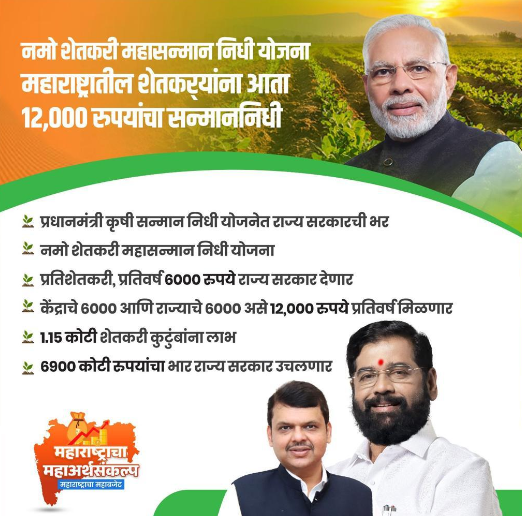
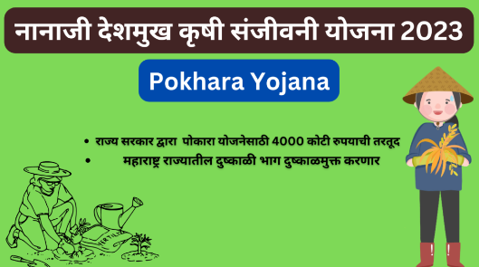
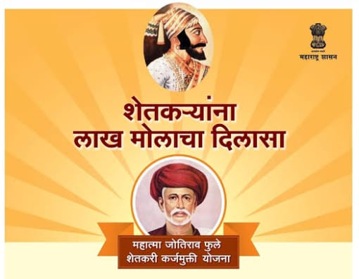
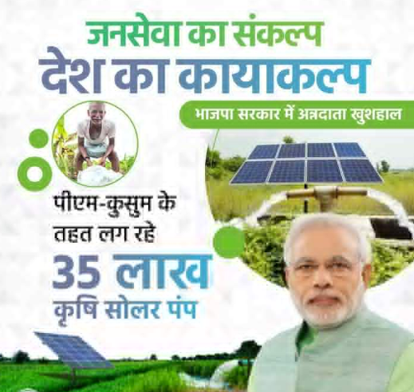
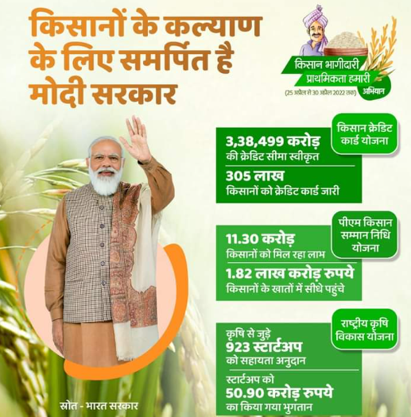

आपले सहर्ष स्वागत आहे 
शासकीय शेतकरी योजना
1. नमो शेतकरी महासन्मान निधी योजना :-
Namo Shetkari Yojana ची सुरवात महाराष्ट्र्र सरकार द्वारा मे २०२३ साली करण्यात आली.शेतकऱ्यांची आर्थिक परिस्तिथि शेती वर अवलंबून असल्यामुळे ह्या गोष्टीला ध्यानात ठेवून महाराष्ट्र सरकारने शेतकऱ्यांना आर्थिक मदत करण्यासाठी Namo Shetkari Yojana ची सुरवात केली.ह्या योजने अंतर्गत शेतकऱ्याला महाराष्ट्र्र सरकार द्वारे दर वर्षी ६००० रु आर्थिक मदत दिली जाईल.Namo Shetkari Yojana अंतर्गत राज्यातील १.५ करोड पेक्षा जास्त शेतकऱ्यांना ह्या योजनेचा लाभ होणार आहे.भारताच्या विस्तीर्ण कृषी क्षेत्रामध्ये, जेथे लाखो शेतकरी राष्ट्रासाठी अन्न सुरक्षा सुनिश्चित करण्यासाठी अथक परिश्रम करतात, नमो शेतकरी योजना आधाराचे दिवाण म्हणून उदयास येते. Shetkari Yojana शेतकऱ्यांना थेट आर्थिक सहाय्य देऊन, नाविन्यपूर्ण पद्धतींना प्रोत्साहन देऊन आणि सर्वांगीण कृषी विकासाला चालना देऊन सक्षम बनवण्याचा उद्देश आहे. आर्थिक दरी कमी करून आणि अर्थव्यवस्थेतील शेतकऱ्यांची महत्त्वपूर्ण भूमिका ओळखून, नमो शेतकरी योजना कृषी क्षेत्रासाठी आणि ते टिकवून ठेवणाऱ्यांच्या जीवनासाठी उज्ज्वल भविष्य घडवण्याचा प्रयत्न करते.

योजनेच्या अधिक माहिती साठी या लिंक वर क्लिक करा - नमो शेतकरी महासन्मान निधी योजना
2. Pokhara Yojana / नानाजी देशमुख कृषी संजीवनी योजना :-
नानाजी देशमुख कृषी संजीवनी योजना , जी पोखरा योजना म्हणूनही ओळखली जाते, ती राज्यातील दुष्काळग्रस्त आणि आत्महत्याग्रस्त भागात लागू आहे, यासाठी राज्य सरकारने 200 कोटी रुपयांचा निधी मंजूर केला आहे. सुमारे 40,000 अर्जदार आहेत. प्रलंबित पोचरा योजनेसाठी 800 कोटी रुपयांचा दावा करण्यात आला होता. नानाजी देशमुख कृषी संजीवनी प्रकल्प पोखरा योजनेंतर्गत हा प्रकल्प महाराष्ट्र शासनाच्या कृषी विभागामार्फत जागतिक बँकेच्या आर्थिक मदतीतून राबविण्यात येत आहे. पोखरा योजना ही योजना महाराष्ट्राची Shetkari Yojana योजना आहे, नानाजी देशमुख कृषी संजीवनी प्रकल्प पोखरा योजनेंतर्गत, हा प्रकल्प महाराष्ट्र शासनाच्या कृषी विभागाने जागतिक बँकेच्या आर्थिक सहाय्याने राबविण्यात आला आहे, यासाठी 421 कोटी 86 हजार रुपये खर्च करण्यात आला आहे. या योजनेसाठी वाटप करण्यात आले आहे.पोखरा योजनेत खर्च झालेल्या रकमेपैकी 200 कोटी रुपये राज्य सरकारने दिले असून, दुष्काळग्रस्त जिल्ह्यांमध्ये आत्महत्या रोखण्यासाठी ही योजना लागू करण्यात आली असून, त्यामुळे शेतकऱ्यांना दुष्काळातून दिलासा मिळणार असून, शेतकऱ्यांचे उत्पन्न वाढणार आहे.

योजनेच्या अधिक माहिती साठी या लिंक वर क्लिक करा – देशमुख कृषी संजीवनी योजना.
3. महात्मा फुले कर्ज माफी योजना :-
महाराष्ट्र सरकारने राज्यातील शेतकऱ्यांचे जीवनमान आणि उत्पन्न वाढविण्यासाठी अनेक प्रकल्प राबवले आहेत. महाराष्ट्र mahatma phule karj mafi yojana राज्य Mahatma Phule Karj Mafi Yojana सरकारने 21 डिसेंबर 2019 रोजी शेतकऱ्यांनी शेतीसाठी बाहेरील स्त्रोतांकडून घेतलेले कर्ज माफ करण्यासाठी सुरू करण्यात आली.कर्जमाफीसाठी विनंती केलेल्या शेतकऱ्यांची कर्जमाफी यादी 2024 सरकारने त्यांच्या अधिकृत वेबपेजवर पोस्ट केली आहे, ज्यामध्ये अर्जदार शेतकरी त्यांचे नाव लाभार्थी यादीत सहजपणे तपासू शकतात आणि डाउनलोड करू शकतात. अर्जदार हा लेख वाचून त्यांचे नाव लाभार्थी यादीत सहज तपासू शकतात. महाराष्ट्र सरकार या योजनेअंतर्गत राज्यातील शेतकऱ्यांचे 2 लाख रुपयांपर्यंतचे कर्ज माफ करणार आहे. या महात्मा ज्योतिराव फुले कर्ज माफी योजनेचा लाभ राज्यातील अल्प व अत्यल्प भूधारक शेतकऱ्यांना तसेच ऊस, फळे आणि इतर पारंपरिक शेती करणाऱ्या राज्यातील शेतकऱ्यांनाही मिळणार आहे.सरकारने ही Shetkari Yojana काढली कारण असे अनेक शेतकरी आहेत ज्यांनी बँकेतून कर्ज घेतले आहे आणि त्यांची पिके वाया गेल्यामुळे ते कर्ज फेडता येत नाही .आणि अनेक वेळा असे घडते की कर्ज फेडण्यासाठी शेतकऱ्यांना स्वतःचे शेत विकावे लागते आणि अनेक समस्यांना सामोरे जावे लागते.या सर्व समस्या लक्षात घेऊन सरकारने सर्व शेतकऱ्यांचे कर्ज माफ करावे,असा निर्णय घेतला.

योजनेच्या अधिक माहिती साठी या लिंक वर क्लिक करा – महात्मा फुले कर्ज माफी योजना
4. प्रधानमंत्री सौर पॅनेल योजना :-
केंद्र सरकारच्या ऊर्जा आणि नवीकरणीय ऊर्जा मंत्रालयाद्वारे प्रधानमंत्री सौर पॅनेल योजनेची सुरुवात झाली . प्रधानमंत्री सौर पॅनेल योजनेचे उद्दिष्ट शेतकर्यांना लाभ पोहोचवण्याचे आहे. पंतप्रधानांच्या माध्यमातून कुसुम योजनेच्या माध्यमातून शेतकऱ्यांना दोन प्रकारची बक्षिसे दिली जातील. डिझेल पंपांची जागा सौरऊर्जेवर चालणारे सिंचन पंप घेतील. दुसरे, सरकारने स्थापित केलेल्या सौर पॅनेलद्वारे निर्माण केलेली वीज इतर उद्योगांना विकली जाऊ शकते. भारताचे पंतप्रधान, श्री नरेंद्र मोदी यांनी 1 फेब्रुवारी 2020 रोजी प्रधानमंत्री सौर पॅनेल योजनेच्या प्रारंभाची घोषणा केली आहे. या उपक्रमाद्वारे, भारत सरकार मोफत सौर पॅनेल योजनेचा लाभ देशभरातील 20 लाख शेतकर्यांपर्यंत पोहोचवेल. देश कृषी अनुदानाचे ओझे कमी करून आम्ही DISC0MS चे आर्थिक आरोग्य सुधारत राहू. या योजने अंतर्गत , केंद्र सरकार शेतकऱ्यांना सौर पंपांच्या एकूण किमतीच्या 60% अनुदान देईल.2023 चा अर्थसंकल्प पास करताना अर्थमंत्र्यांनी हि योजना सुरू केली . PM सोलर पॅनेल योजनेचे उद्दिष्ट देशातील शेतकऱ्यांच्या वीज समस्या सोडवणे आहे. या धोरणामुळे देशातील शेतकऱ्यांना स्वावलंबी बनविण्यात आणि त्यांचे उत्पन्न दुप्पट करण्यात मदत होईल.

योजनेच्या अधिक माहिती साठी या लिंक वर क्लिक करा – प्रधानमंत्री सौर पॅनेल योजना
5. प्रधानमंत्री कुसुम योजना :-
कुसुम योजनेचे प्राथमिक उद्दिष्ट शेतकऱ्यांना सौरऊर्जेवर चालणारे सिंचन पंप पुरवणे हे आहे. या योजनेअंतर्गत केंद्र सरकार आणि राज्य सरकार 3 कोटी पेट्रोल आणि डिझेल सिंचन पंपांचे सौर ऊर्जा पंपांमध्ये परिवर्तित करणार आहेत. या कुसुम उपक्रमांतर्गत, जे शेतकरी पूर्वी सिंचन पंपांना वीज देण्यासाठी इंधन किंवा पेट्रोल वापरत होते ते आता सौरऊर्जेचा वापर करतील.या योजनेच्या पहिल्या टप्प्यात देशभरातील १.७५ लाख इंधन आणि पेट्रोल केंद्रांवर सौर पॅनेलचा वापर केला जाईल.कुसुम योजनेंतर्गत येत्या दहा वर्षांत 17.5 लाख डिझेल पंप आणि 3 कोटी कृषी पंपांचे सौर पंपांमध्ये रूपांतर करण्याचे राज्य सरकारचे उद्दिष्ट आहे. राज्याच्या शेतकऱ्यांसाठी हि एक आवश्यक योजना आहे.सरकारने सुरुवातीच्या बजेटमध्ये 50 हजार कोटी रुपयांची राज्यातील शेतकऱ्यांच्या शेतात सौर पंप उभारण्यासाठी आणि सौर उत्पादनांना प्रोत्साहन देण्यासाठी तरतूद केली गेली आहे . 2020-21 च्या अर्थसंकल्पात या उपक्रमांतर्गत राज्यातील 20 लाख शेतकऱ्यांना सौरपंप बांधण्यासाठी मदत मिळणार आहे.

योजनेच्या अधिक माहिती साठी या लिंक वर क्लिक करा – प्रधानमंत्री कुसुम योजना